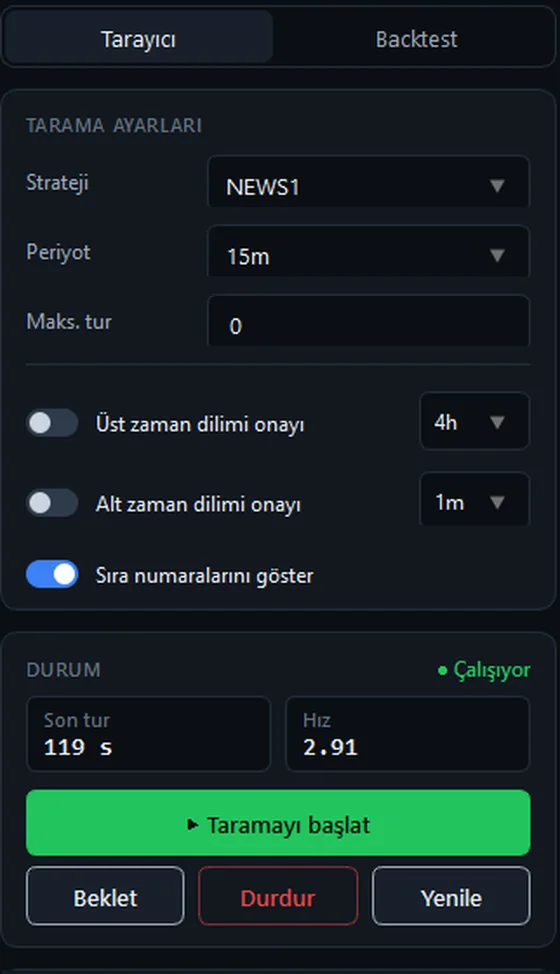

Scanner
Crypto Scanner and Market Scanning Tool
Scan 347 coins on Binance and OKX by default, in rounds on your chosen timeframe. See indicator results, the BUY/SELL/NONE signal and the reason when no signal formed, all in one table.

Real app screen, captured in virtual mode.
Scan, filter, see the signal
The scanner applies your strategy to the whole list every round and shows the result with an explanation.
Choose strategy, timeframe and filters
In the scan settings you choose which strategy runs, which timeframe to scan (e.g. 15m) and how many rounds to run.
- Higher timeframe confirmation (MTF): e.g. 4h trend direction
- Lower timeframe confirmation (LTF): entry timing
- Maximum number of rounds or continuous scanning

Result and reason for every coin
The table shows indicator results and the strategy's signal for every coin. When no signal forms, the reason column explains why, e.g. "Weak trend (ADX < 20)".
- BUY / SELL / NONE signal
- The rule or filter that blocked the signal is visible
- BUY, SELL and no-signal filters plus symbol search

From signal to position
When a signal arrives, a position can open automatically in virtual or real mode according to your settings. Positions are then managed with SL/TP on the Active Positions screen.
- Virtual mode uses no real money
- SL and TP orders are also sent to the exchange
- The Free version does not open positions; scanning and analysis are available

What's in the scanner?
Not just the signal, but the rule behind it.
347 coins by default
Coins available on both Binance spot and USDT futures; stablecoins excluded.
Reason column
Shows which rule or filter blocked a signal.
MTF and LTF confirmation
The higher timeframe checks trend direction, the lower timeframe checks entry timing.
ADX, ATR and market regime
Trend strength, volatility and regime (any, trend, sideways, volatile) filters.
4 strategy types
Scoring, Majority, Strong Majority and Full Consensus turn indicator results into signals.
Data method
Candle data is fetched from the exchange at intervals and cached on your computer; no continuous live data stream is used.
Frequently asked questions
How many coins does the scanner scan?
The default list has 347 coins: those available on both Binance spot and USDT futures, stablecoins excluded.
How long does one round take?
It depends on the number of coins and the wait settings. With 347 coins, the second and later rounds take about 100 seconds.
Does the scanner use a live data stream?
No. Candle data is fetched from the exchange at intervals and cached locally. Signals update every round.
Can I use the scanner in the Free version?
Yes. Scanning and analysis are available in Free; opening positions requires Trial or Full.
Related pages
Try your strategy in virtual mode today
Download the app, build your strategy and see how it works without using real money.